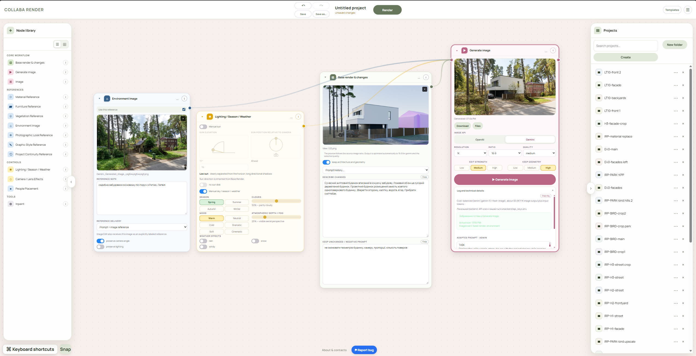
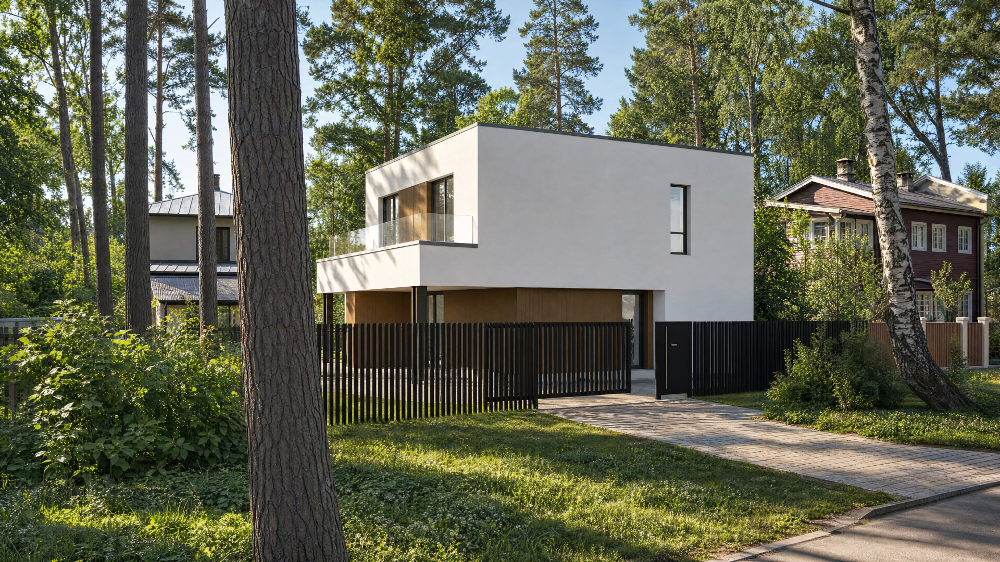
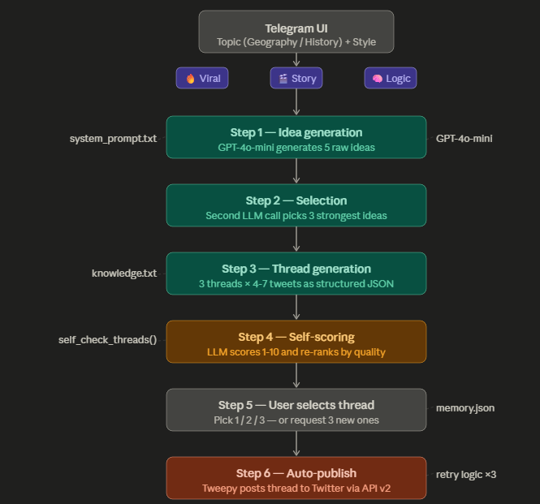
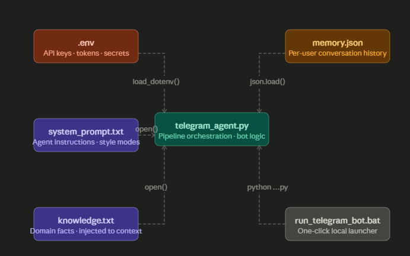
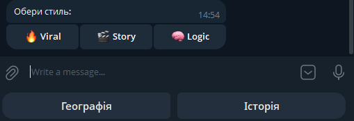
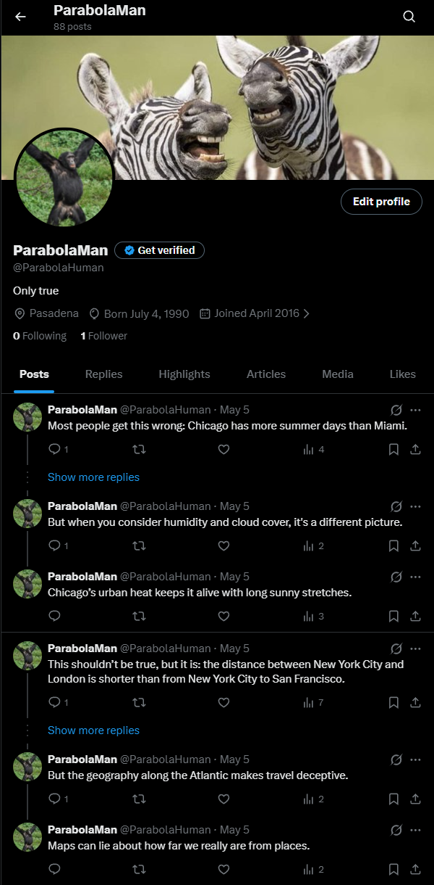
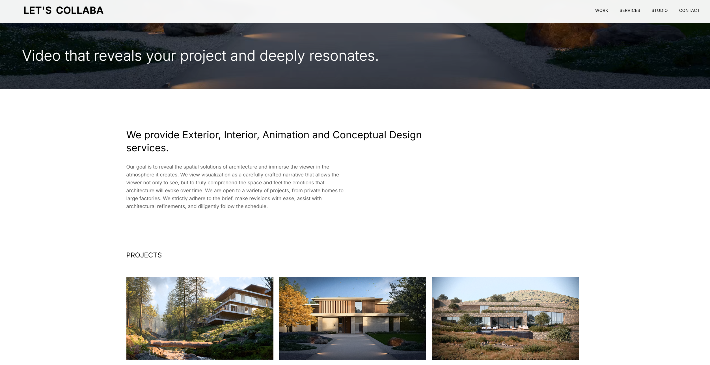

About
I’m an architect and visual-production specialist building AI products, with 16 years of experience in complex project delivery, visual quality, and systems thinking. I focus on real production problems first, then build the workflow or tool that removes the bottleneck.
My main project is Collaba Render - a node-based AI visualization platform I originally built for my own architectural visualization work. For roughly four months it has been my primary AI production environment on commercial projects. I am now developing it into a SaaS product for professional architects.
My path into AI engineering has been practical. I first built the Collaba Visual website with Gemini, then created a Python Twitter agent as a hands-on learning project to understand APIs, tokens, agent logic and code structure. Each project became a step toward building more complete products.
Currently focused on AI product development, node-based visual workflows, API integration, and controlled human-in-the-loop systems for image and video production.
Projects
Collaba Render
Node-based AI visualization platform for architects. Built instead of adopting ComfyUI as my production environment, and used for roughly four months in commercial archviz production. Now evolving into a SaaS product with cloud deployment, user accounts, and a product-focused UI/UX.
- JavaScript
- Node.js
- Express
- OpenAI API
- Gemini API
- Supabase
- Railway
- GitHub
- Node editor UX
Project: Production-tested AI product for controlled architectural image generation and editing.
Role: Product concept, UI/UX direction, workflow architecture, prompt systems, AI-assisted frontend/backend implementation, API integration, testing, deployment, and continuous validation on commercial projects.
Evolution: Started as a local internal tool, became my main AI production environment for roughly four months, and is now being rebuilt as a SaaS platform for professional architects.
Core idea: Give architects a controllable node-based workspace where base renders, references, project context and generation models are combined visually instead of being hidden inside one long prompt.
Workflow
- Upload a base render and connect environment, materials, project-continuity, people, furniture or other references.
- Each connected node contributes a controlled part of the generation context.
- Prompt logic combines user intent with project constraints and reference images.
- The backend sends image-generation or image-edit requests to OpenAI or Google models through API calls.
- The result returns to the workflow for visual review, iteration and final selection.
What I built
- Browser-based node canvas with reusable visual workflows for architectural generation tasks.
- Context and prompt orchestration focused on geometry preservation, camera consistency, materials, environment and project continuity.
- Backend integrations with OpenAI and Google image models through APIs.
- User account and authentication infrastructure with Supabase.
- Cloud deployment through Railway, with the product repository and version control in GitHub.
- Ongoing UI/UX redesign and productization for external professional users.




AI Twitter Content Agent
Hands-on AI engineering learning project built to understand Python, APIs, tokens and agent architecture by coding a working system instead of using n8n or Make. Started with Gemini and later moved to Claude Code while actively reviewing, editing and testing the code myself.
- Python
- OpenAI API
- Telegram Bot API
- Twitter API v2
- Tweepy
- JSON
- Gemini
- Claude Code
Stack: Python · OpenAI API (GPT-4o-mini) · Telegram Bot API · Twitter API v2 · Tweepy · Gemini · Claude Code · python-dotenv
Why I built it
The goal was not to create a sophisticated social-media product. I wanted a practical project that forced me to learn how APIs, tokens, environment variables, Python modules and multi-step LLM logic work. I deliberately avoided no-code tools, asked the coding assistants to explain the code, and manually reviewed or replaced blocks while learning the underlying concepts.
Pipeline
- Idea generation - GPT-4o-mini generates 5 raw ideas
- Selection - second LLM call picks 3 strongest ideas
- Thread generation - 3 threads x 4-7 tweets as structured JSON
- Self-scoring - LLM scores 1-10 and re-ranks by quality
- User selects 1, 2, or 3 - or requests 3 new options
- Auto-publish - Tweepy posts thread to Twitter via API v2 with retry logic
Results
- Content creation time: 30-60 min → under 2 min
- Live at @ParabolaHuman - 13 posts, 4 full threads published
- Built in 3-4 weeks while learning Python and APIs from scratch




Collaba Visual Website
My first AI-assisted coding project. I researched competitor websites, defined the visual direction, typography, page structure and animations, then used Gemini primarily to translate those design decisions into working HTML/CSS/JS.
- HTML
- CSS
- JavaScript
- Netlify
- AI-directed development
Project: collabavisual.com - live commercial website for my architectural visualization studio.
Role: Competitor research, concept, visual direction, typography, page structure, UX/UI, custom text animations, QA and deployment.
AI workflow: Gemini was mainly used as a coding partner to turn my design decisions into working HTML/CSS/JS and troubleshoot implementation issues.
Manual work: I regularly edited spacing, sizing and layout directly in code, handled GitHub commits myself, deployed to Netlify and configured the custom domain.

Experience
Present
Founder & Owner
Collaba Visual
- Founded and run an architectural visualization studio
- Delivered 63 commercial projects for clients in Ukraine and the Netherlands
- Integrated Collaba Render into production, reducing overall visualization time by approximately 30-40% while significantly improving visual quality and speeding up first client approvals
- Blender
- Photoshop
- Collaba Render
- Google AI Studio
- OpenAI Images
- Gemini
- Kling AI
- Veo
2022
Founder & Lead Architect
Collaba Architects
- Established and ran a boutique architectural studio
- Owned business operations, hiring, client relations, and project delivery
- Led large-scale urban planning and residential projects for clients in Ukraine and abroad
- Developed internal digital standards and automated documentation processes across concurrent projects
2017
Project Architect & Team Lead
ZOTOV & CO
- Managed multidisciplinary teams for high-profile residential competitions and urban development projects
- Led architectural visualization, visual narrative, and technical execution for client and jury presentations
2016
Co-founder & Strategist
CityLab Poltava (NGO)
- Co-founded urban research NGO
- Developed Poltava's cycling infrastructure strategy, formally adopted by the city government in 2016
- Coordinated stakeholders across local government, urban planners, and community groups
2015
Architect & 3D Specialist
Various Studios
- Architectural master planning and high-detail 3D modeling for public and private infrastructure across Ukraine
Skills
AI Product & Workflows
- AI Product Prototyping
- Node-based Workflows
- Prompt Engineering
- OpenAI API
- Gemini API
- Claude Code
- Codex
- API Integrations
- Human-in-the-loop Systems
Generative Visual
- Google AI Studio
- OpenAI Images
- Gemini Image
- Kling AI
- Veo
- Stable Diffusion
- ComfyUI - basic / experimental
- ControlNet - basic / experimental
- AI Image Editing
Technical
- JavaScript
- Node.js
- Express
- REST APIs
- Supabase
- Railway
- GitHub
- HTML / CSS
- Python - basic
- JSON
Domain
- Architectural Visualization
- Visual Quality Control
- Systems Thinking
- Product / UX Direction
- Project Management
- Client Consulting
- Blender
- Photoshop
04. What's Next?
Get In Touch
Open to AI Product Builder, Generative AI Workflow, Creative Technologist, and AI Integration roles. I am especially interested in teams building practical image, video, or multimodal production systems.
+380 95 047 4011 | maksymlysogora@gmail.com | Kyiv, Ukraine